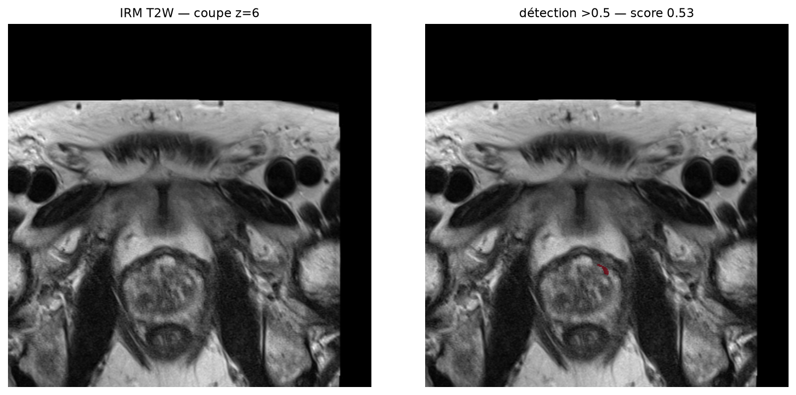
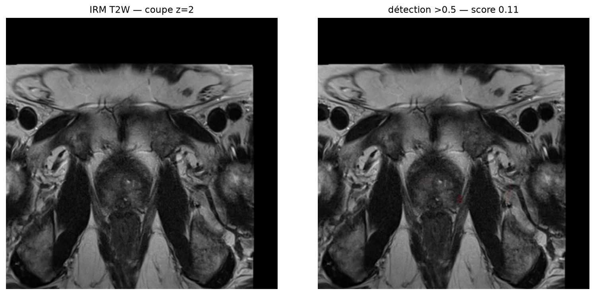
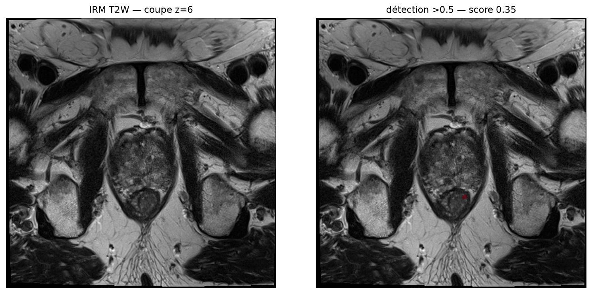
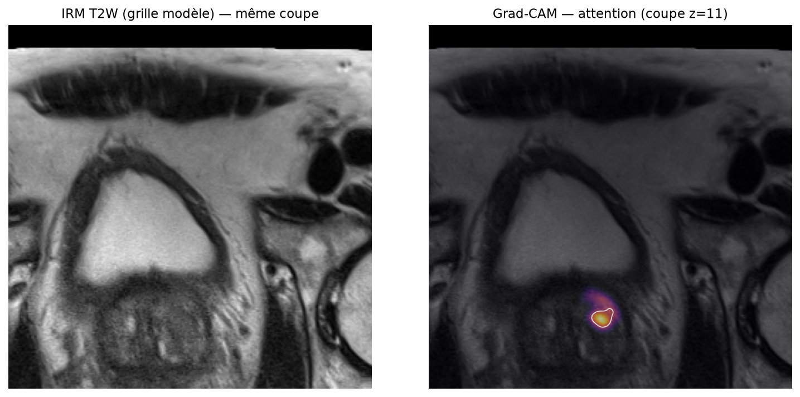
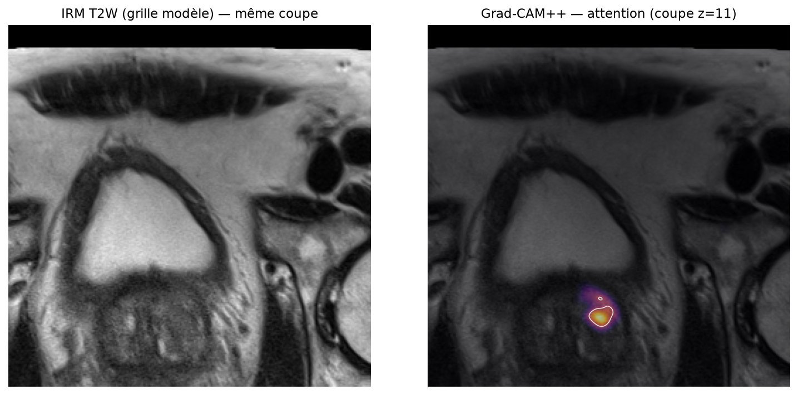
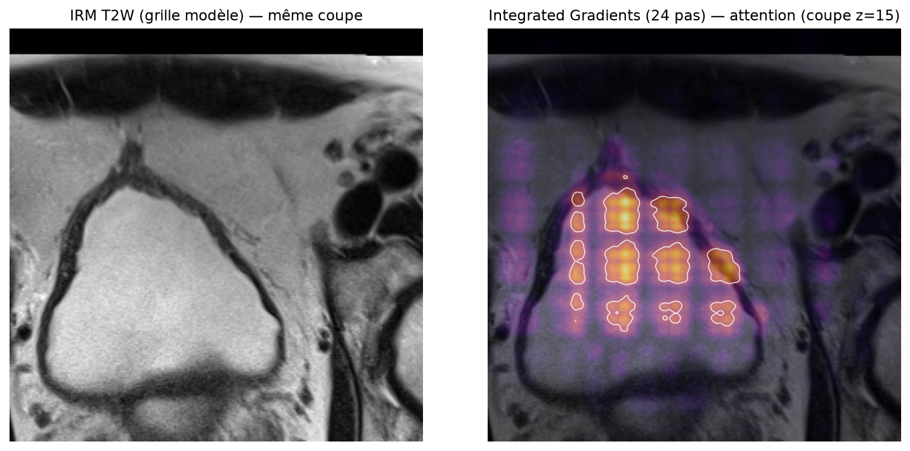
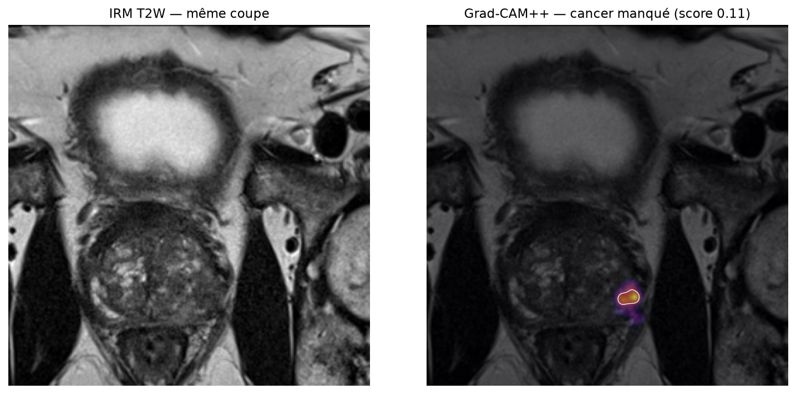

Le csPCa est une atteinte maligne de la prostate significative cliniquement. Le projet évalue un détecteur d'apprentissage profond sur des examens IRM biparamétriques (T2W, ADC, DWI/HBV), avec deux axes : validation d'un modèle de détection, puis analyse de l'interprétabilité de ses décisions.
Cette phase est consacrée à l'intégration et à la validation du modèle de détection utilisé comme base du système d'Explainable AI.
| Modèle | PI-CAI — ensemble 5 folds UNet 3D (Saha et al., Lancet Oncology 2024) |
|---|---|
| Status | ✓ Model loaded · ✓ Weights loaded (5 checkpoint(s) LFS, 127.2 Mo chacun) · ✓ Configuration loaded · ✓ Inference ready |
| Paramètres / checkpoint | 31.8 M |
| Configuration d'entrée | shape [20, 256, 256], espacement [3.0, 0.5, 0.5], 3 canaux, 2 classes |
| Inférence | TTA miroir horizontal · lissage gaussien σ = 1,5 · moyenne des 5 folds · exécution sur cuda (chargement : 0.76 s) |
Les cases de démonstration (mêmes données que la démonstration Phase 1) sont converties en analyses reproductibles : chaque cas traverse la chaîne Input → Inférence → Score → Décision. Les tableaux ci-dessous proviennent directement de l'exécution du notebook.
| Case | csPCa | PI-RADS | Centre |
|---|---|---|---|
| 10000_1000000 | non | 4 | PCNN |
| 10001_1000001 | non | 2 | RUMC |
| 10002_1000002 | non | 2 | ZGT |
| 10005_1000005 | oui | 4,4 | RUMC |
| 10008_1000008 | oui | 5,N/A | ZGT |
| 10012_1000012 | oui | 5 | RUMC |
| 10032_1000032 | oui | 5,4 | RUMC |

L'inférence produit une probabilité élevée au niveau de la lésion ; la décision découle de la comparaison score / seuil officiel.

Présenté tel quel : le score du modèle reste nettement sous le seuil officiel. C'est précisément le type de cas que l'analyse de l'opératoire (Phase 2) met en évidence.

Score intermédiaire, sous le seuil officiel, supérieur au seuil recalibré de la Phase 2 : cas relevant du choix d'opératoire, présenté sans interprétation clinique.
Pour chaque cas, l'inférence produit un score d'étage cas (probabilité de csPCa significatif après ensemble k-fold, TTA, lissage). Ce score est comparé au seuil de décision — rien d'autre n'intervient. Le vocabulaire affiché correspond exactement à la sortie du modèle.
Sur cet échantillon de démonstration, un seul des quatre cancers réels dépasse le seuil officiel (0.50) ; avec le seuil recalibré de la Phase 2 (0.157, figé sur 120 cas de validation), trois de quatre le dépasseraient. Cette amélioration est mesurée et documentée en section Résultats.
Aucun seuil « arrange » les résultats : la Phase 1 utilise le seuil officiel publié, la Phase 2 documente une recalibration figée sur la seule validation avant tout accès au test.
Origine : point opératoire de l'évaluation PI-CAI (Saha et al., Lancet Oncology 2024 : sensitivity 70,9 % / PPV 35,5 % au seuil 0,50 sur le jeu test du concours). Chaque exemple ci-dessus applique strictement cette règle.
Règle préenregistrée : choïx de la configuration de post-traitement par AP maximale en validation, seuil = max-F1 en validation ; le test n'est scoré qu'une seule fois après gel. C'est l'unique « changement de seuil » du projet, et il est mesurable.
| Jeu — config | Seuil | AUROC | AP | Sens. | Spéc. | Précision | F1 | Acc. éq. | ECE |
|---|---|---|---|---|---|---|---|---|---|
| Validation — officiel @0.50 | 0.500 | 0.8379 | 0.7852 | 18% | 100% | 100% | 0.300 | 59% | 0.158 |
| Validation — figé (no_extract) | 0.157 | 0.8451 | 0.7893 | 62% | 94% | 81% | 0.700 | 78% | 0.173 |
| Test — officiel @0.50 | 0.500 | 0.8042 | 0.7064 | 24% | 100% | 100% | 0.381 | 62% | 0.145 |
| Test — figé (no_extract) | 0.157 | 0.8081 | 0.7107 | 56% | 91% | 70% | 0.623 | 73% | 0.168 |
DeLong p = 0.947 (classement équivalent) ; ΔAUROC bootstrap -0.0039 IC95 [-0.022 ; 0.011] ; AUROC test figé 0.8081 [0.710 ; 0.895]. La contribution mesurable est le point opératoire : sensibilité 23,5 % → 55,9 % et F1 0,381 → 0,623 au test avec le seuil figé (sans ré-entraînement).
| Méthode | Principe | Ce qu'elle montre |
|---|---|---|
| Grad-CAM 3D | pondération des activations de la dernière connexion utile par les gradients moyens | où le réseau regarde |
| Grad-CAM++ 3D | pondération du second ordre (α par voxel) | attention plus concentrée, utile sur petites lésions |
| Integrated Gradients | intégration des gradients sur 24 pas depuis la baseline nulle | les attributions qui « poussent » le score |
| Occlusion 3D | masquage de blocs et impact sur le score | fidélité du score (contrôle quantitatif) |

Grad-CAM — attention concentrée sur la lésion suspecte (coupe z=11); la coupe de score max du modèle (z=10) coïncide — cohérence spatial score/attention.

Grad-CAM++ — même coupe ; l'attention se concentre davantage (enrichissement max 20.0× sur le cas audité le plus confiant).

Integrated Gradients — attributions (24 pas) : zones qui contribuent positivement au score sur la coupe z=15.

Grad-CAM++ sur un cancer manqué (case 10012, score 0.11 < 0.50) : l'absence d'alarme correspond à une réponse ciblée d'amplitude insuffisante — présentation honnête, cet exemple montre une limite actuelle plutôt qu'une réussite.
| Contrôle | Valeur (audit 6 cas) | Lecture |
|---|---|---|
| Fidélité insertion / délétion (Grad-CAM) | ins 0.46 · dél 0.35 | l'attention pousse réellement le score ; sur le cas le plus confiant (0.73 / 0.21), l'excellent indicateur de fidélité |
| Randomisation des poids (Adebayo 2018) | |r| moyen ≈ 0.01 | la carte ne dépend pas d'un artefact trivial |
| Stabilité ±1 voxel (Pearson) | jusqu'à 0.99 | la carte est robuste au bruit numérique |
| Densité d'attention (enrichissement) | jusqu'à 20.0× | sur petites lésions, on juge la concentration relative, pas l'IoU brut |
Source : experiments/results/xai/xai_quality.csv — audit réel (6 cas incl. FP/FN) — aucune valeur fabriquée.
Cette première implémentation constitue la base pour les améliorations et comparaisons qui suivront.
python scripts/run_phase2.py)